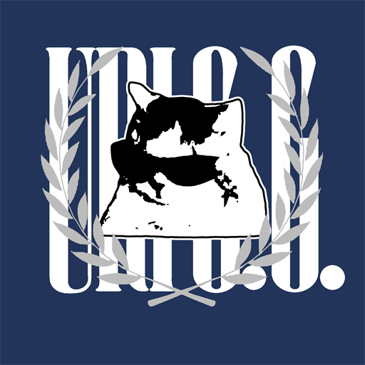
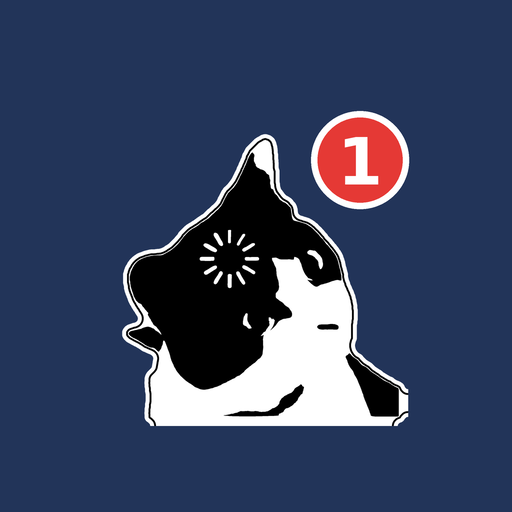

URIGG — Security, logged.
- today
- —
- time
- --:--:--
- last post
- —
- last push
- —
- calendar
- —
D-day
캘린더 위젯에 로그인하면 D-day를 저장할 수 있어요.
News
KISA · 데일리시큐 · THNLog
블로그 ↗urigg@security:~$ tail -n 5 security.log
Progress
tree로 보기 ↓Programs
-

코워크 캘린더Windows · 최신 버전
다운로드 대화로 짠 일정을 위젯·아이폰에 띄우는 캘린더
$ tree --dirsfirst